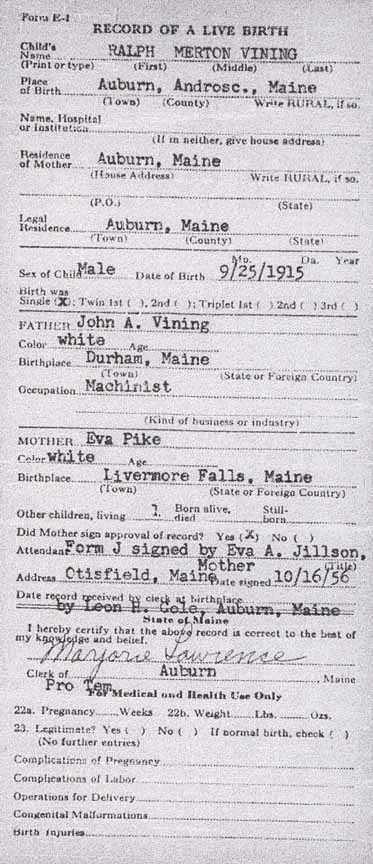
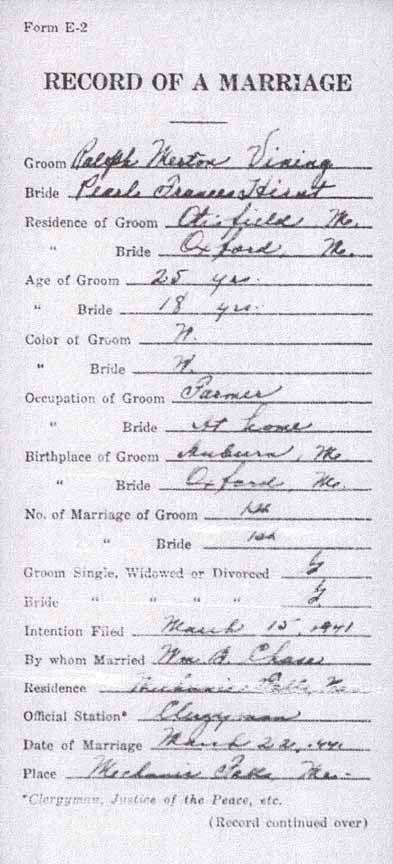
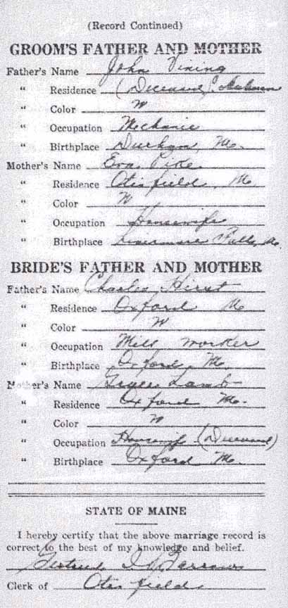
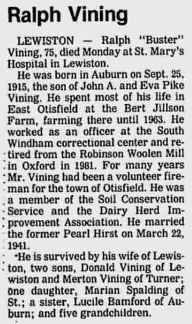
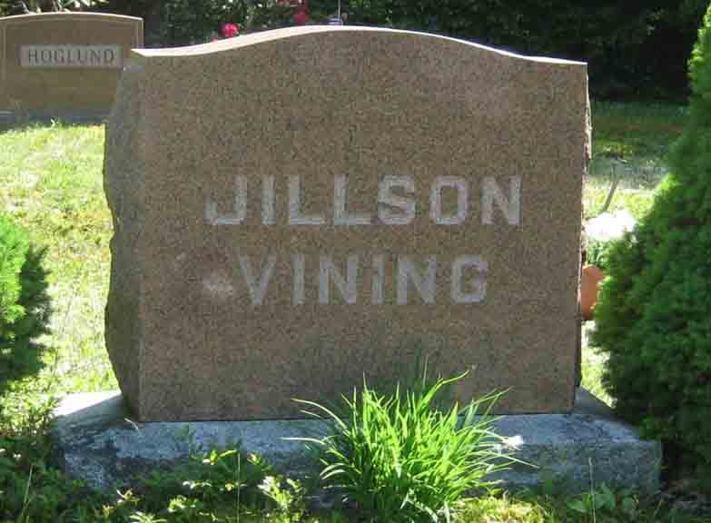
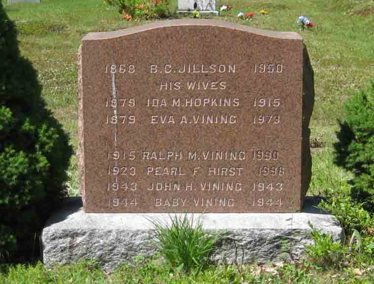
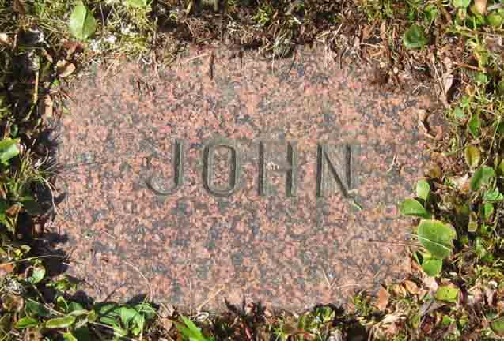
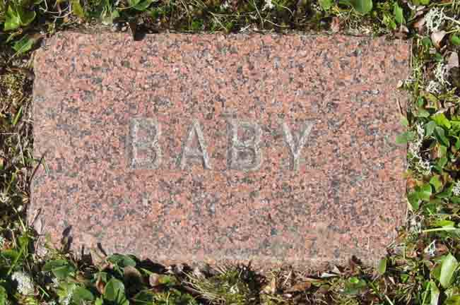

Documentation for Ralph Merton Vining - Pearl F. Hirst
Birth Data
Birth record of Ralph Merton Vining:

Marriage Data
Marriage record of Ralph Merton Vining and Pearl F. Hirst:


Death Data
Obituary for Ralph Merton Vining (from Lewiston, Maine, Sun-Journal, 7 November 1990, page 3, column 1):

Headstone (front and back) for family of Ralph Merton Vining, in Elmwood Cemetery, Otisfield, Oxford County, Maine (from Find A Grave):


Gravestones of John Henry Vining and unnamed baby, son of Ralph Merton Vining and Pearl F. (Hirst) Vining, in Elmwood Cemetery, Otisfield, Oxford County, Maine (from Find A Grave):

